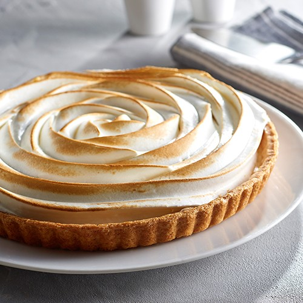

Tarte au citron meringuée

Description
La tarte au citron meringuée est une tarte au citron complétée par une meringue. C'est une tarte sucrée garnie de crème à base de citron réalisée à partir d'un mélange d'œufs, de sucre, de jus de citron et de zeste de citron.
La tarte au citron meringuée est indéniablement mon dessert préféré ! Voici de quelle manière je la prépare.
Ingrédients
Pâte sablée :
- 250 g de farine
- 150 g de beure
- 50 g de sucre
- 50 g de sucre glace
- 1 oeuf
- 1 pincée de sel
Crème au citron :
- 150 ml de jus de citron soit 3 ou 4 citrons
- Zeste d'un citron
- 150 g de sucre ou moins selon votre goût
- 3 oeufs
- 1 c. à soupe de maizéna ou farine
- 75 g de beure
Meringue :
- 2 blancs d'oeufs (ou 3 petits)
- 75 g de sucre
Préparation
Réalisation et cuisson de a pâte sâblée :
- Battre l'oeuf avec les sucres et le sel.
- Ajouter la farine en 1 fois, pétrir du bout des doigts.
- Ajouter le beurre mou en morceaux, pétrir rapidement et former une boule.
- Filmer et mettre au frais au moins 1 heure.
- Étaler dans le plat à tarte, recouvrir d'une feuille de papier sulfurisé et d'haricots, de billes d'argile ou d'une chaîne de billes métalliques disponible en grandes surfaces.
- Faire cuire 10 minutes à 180°C, puis enlever le "poids" et remettre 8-10 minutes pour bien cuire le centre. La pâte doit être dorée (sinon prolonger la cuisson de quelques minutes).
- Réserver
Réalisation de la crème au citron :
- Prélever le zeste d'un citron non traité.
- Porter à ébullition le jus des citrons avec le zeste.
- Battre les oeufs avec le sucre et la maïzena.
- Ajouter progressivement le jus de citron en filet sans cesser de fouetter.
- Remettre le tout sur feu moyen et faire épaissir. En remuant bien tout le temps, vous obtiendrez une crème.
- Laisser tiédir et ensuite ajouter le beurre mou en morceaux, en fouettant bien.
- Garnir le fond de tarte précuit.
- Réserver au frais.
Réalisation de la meringue :
- Fouetter les blancs en neige, lorsqu'ils deviennent fermes, rajouter le sucre et fouetter encore quelques secondes.
- Garnir le dessus de la tarte avec une poche à douille, par exemple, et mettre cette dernière dans le four chaud 'fonction grill' pendant 1 petite minute pour colorer la meringue. Pour aller plus vite, vous pouvez également dorer la meringue au chalumeau.